Location Access Controller (Rodin Tutorial)
From Event-B
In this section, we will take a closer look at a few more complex proofs. For this, we will use the model of the Location Access Controller, which is available as a Rodin project archive. Explanations on the model can be found in the chapter entitled “Location Access Controller” of the Event-B book. Our task is to develop the proofs for deadlock freeness of the initial model and of the first refinement.
Import Doors.zip. Looking through it, you will see that everything already has been proved. This is true, however, RODIN does not do any deadlock freeness proof yet, so you will have to add them yourself.
Initial Model
First, let us look at the initial model, constisting of doors_ctx1 and doors_0. There are two carrier sets in the model, one for people and one for locations. Then, there is a location called outside and a relation aut which reflects where people are allowed to go. Everyone is allowed to go outside. The model only has one event, which changes the location of a person. So, proof of deadlock freeness means proving, that someone can always change room.
- Add a new derived invariant to doors_0 called “DLF” (making it derived means clicking the "theorem" button) and change the predicate so that it is the disjunction of all guards (since there is only one guard here, it would be 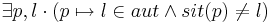.
- Save the machine. You will see that the autoprover fails to prove the theorem (DLF/THM). Let us analyze whether this is an inconsistency in the model. In order to succeed with the proof, we need a tuple 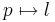 that is in aut, but not in sit. Searching the hypotheses, we find AXM4 of doors_ctx1, which states that there is a location l, where everyone is allowed to go. So, for every person p in P, and 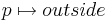 is in aut. Since these are different, at least one of them cannot be in the function sit. Now, all we would need to prove is that P is nonempty. This holds, as carrier sets always are nonempty, but is a bit hard to derive. In the Proof Control view, first disable the post-tactics (there is a dedicated button in this view on the top right corner, up to the toolbar). Then add the hypothesis 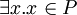 using the ah button. Then, click on the Auto Prover button (The button with a robot on it). Other provers do not work here. After successfully adding the hypothesis, we can conclude the proof as follows:
- Click on the existential quantifier of the expression 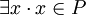 (appearing in the selected hypothesis). You see that it is automatically instantiated, it leads to the selected hypothesis 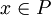. We can now instantiate p in the goal with x : enter x in the yellow box corresponding to p in the Goal view and click on the existential quantifer.
- It remains now to instantiatel. In order to instantiate it, we need a case distinction. Type sit(x) = l this into the proof control and click on Case Distinction (dc) to look at the two cases sit(x) = l and 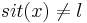. Before starting with the cases, the prover now wants you to prove that 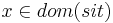. This can be done with p0, as sit is a total function. In the first case x is situated in l, so it cannot be in outside. So, you can instantiate l with outside (type outside in the box corresponding to l and click on the existential quantifier). In order to prove that x is allowed to outside, you will need to select the hypothesis 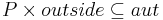 (if this hypothesis doesn't appear in the search hypothesis, type outside in the proof control view and click on the "search hypothesis" button, and add it to the selected hypothesis with the green + icon next to it). Then you can finish this case with p0. If you look at the proof tree, you see that you now have reached the other branch of the case distinction. In this case, you can simply instantiate l with l, as x is not situated there. Finally, click on p0 to finish the proof.
First Refinement
Now we get to a bit harder proof: The deadlock freeness proof for the first refinement. There is not much that has changed. The constant com has been added in order to describe which rooms are connected. Additionally, we have a constant exit, which will be explained later. The post-tactics should still be disabled.
- Open door_1 machine and add a derived invariant (theorem) called DLF stating 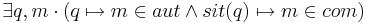 to it, then save the file. Once again, the prover fails to prove deadlock freeness automatically.
- At the beginning of the proof, there are no selected hypothesis at all. So we need to select a few. The old deadlock freeness invariant will be useful, AXM7 of doors_ctx2 too. To begin with, we try to avoid using exit, as we want to keep things as simple as possible. But since sit and aut are inside the invariant, we also are likely to need 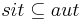 and
 .
.
- Once again, the prover automatically rewrites the existential quantifiers in the hypotheses. We now look at the proof. There is an easy case if sit(p) = outside. Add this case as previously with a case distinction (dc) and solve it. For q, the choice p is obvious. For m, you will use the existential quantifier of AXM7 to instantiate m with l as l0.
- For the other case, we will need the notion of exit. The axioms about exit state that
- (AXM 3) Every room except the outside has exactly one exit.
- (AXM 4) An exit must be a room that communicates with the current one.
- (AXM 5) A chain of exits leads to the outside without any cycles or infinite paths.
- (AXM 6) Everyone allowed in a room is allowed to go through its exit.
In our proof, we still need to show that anyone who is not outside can walk through a door. For this, AXM 5 is useless, so we add all hypothesis containing exit except for AXM 5. Now we only need to instantiate q and m correctly and concluding the proof should not be too hard. Once again, for q, the choice p is obvious. But it is not quite as easy for m. Expressed in language, m must be the room behind the exit door of the room that p is currently in. Try translating this into set theory. But do not worry if you get it wrong. You can still go back in the proof by right-clicking at the desired point in the proof tree and choosing prune.